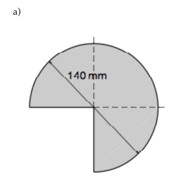
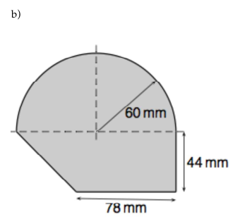

Berechnen Sie den Flächeninhalt und den Umfang der folgenden Blechstücke.
(Quelle: Kusch und Glocke 2012, S. 219)
a)

Es handelt sich hier um einen Dreiviertelkreis.
$A=\frac{3}{4} \pi r^2 \approx 115.4 \text{ cm}^2$
$U=\frac{3}{4} \pi r + 2r \approx 47 \text{ cm}$
b)

Es handelt sich hier um einen Halbkreis und ein Trapez:
$A=\frac{1}{2} \pi r^2 + \frac{(a+c)}{2} \cdot h \approx 100.1 \text{ cm}^2$
$U=\frac{1}{2} \pi r + a + h + d \approx 37.1 \text{ cm}$